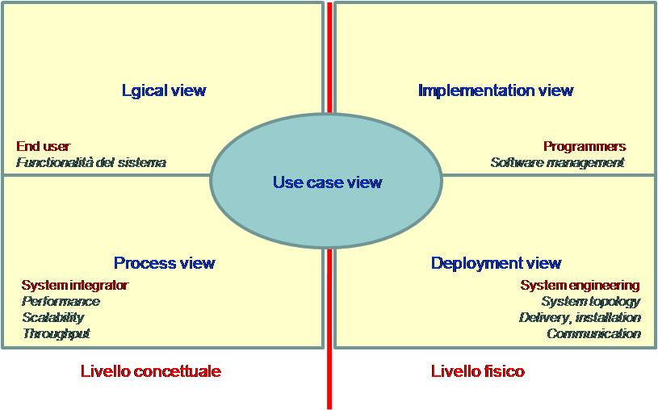

Ponendo al centro dell'attenzione i requisiti espressi dagli use-cases, le viste
del sistema espresse attraverso modelli possono riflettere aspetti
concettuali o fisici e porre in luce aspetti diversi in relazione ai
diversi attori coinvolti nel processo.
La figura che segue esprime una possibile articolazione di riferimento:
L'insieme dei modelli che formano gli artefatti costruiti nelle varie fasi del processo
deve formare una descrizione completa,
consistente e non troppo ridondante (di una vista) del sistema
|
Figura 1. I modelli nel processo

|
La transizione tra i diversi modelli deve essere continua, cioè
deve avvenire quanto più possibile "senza cuciture" (in modo seamless)
facendo in modo che un oggetto in un modello abbia il suo o i suoi corrispettivi in un altro.
Il concetto di transizione seamless tra modelli
è alla base della proprietà di tracciabilità (traceability),
per cui, in qualsiasi direzione si percorra la sequenza di modelli generati,
deve essere possibile mappare uno o più oggetti in un modello in uno
o più oggetti in un altro.
|
Figura 2. Un sistema integrato di modelli

|